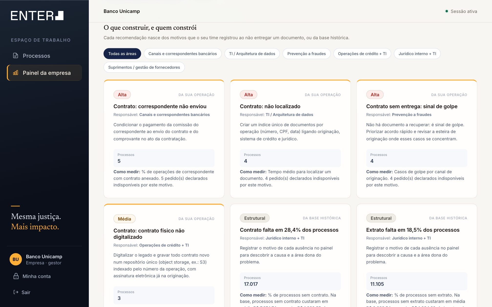
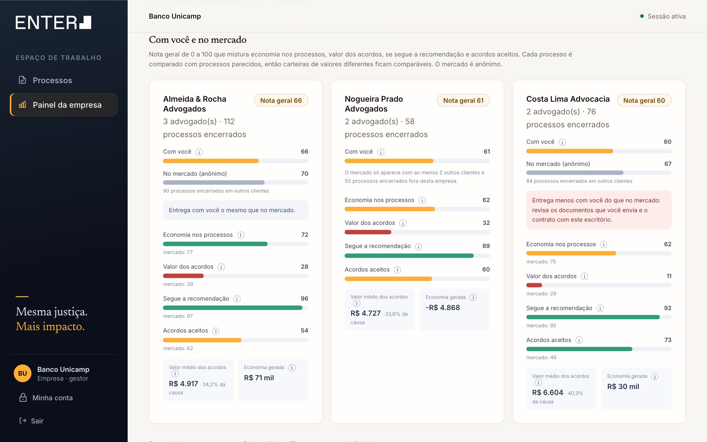

EnterOS · Banco Unicamp · ações de não reconhecimento de empréstimo
Defender ou fazer acordo? Existe uma terceira resposta.
0:20–1:1002 / 30
O problema
Milhares de páginas por mês — e cada advogado decide do seu jeito.
Processos novos15 milpor mês no Banco Unicamp; 5 mil alegam não reconhecer o empréstimo
Páginas por mês≈ 87 mil≈ 17 páginas por processo, nos processos de exemplo, × 5 mil
Só para ler≈ 18advogados em tempo integral, a 2 minutos por página
Pago na baseR$ 193 miem acordos e condenações, nas 60 mil sentenças
LentoLer autos e subsídios de cada processo, à mão, não acompanha o volume.
Sujeito a erroA página que decide o caso pode estar no meio de outras vinte.
EmpíricoProcessos iguais recebem decisões diferentes, conforme quem os analisa.
Páginas e horas são estimativas a partir dos 2 processos de exemplo.
1:10–1:4003 / 30
Análise de dados sobre as 60 mil sentenças
Seis análises. Um padrão que ninguém estava olhando.
01Efeito de cada documentocom × semTaxa de derrota e custo médio comparados, documento a documento.
02Segmentação em perfistabela de contingênciaContrato × extrato × comprovante × alegação: 16 perfis com amostra grande.
03Agrupamento de estadosgrupos de riscoEstados em três grupos, aplicados como ajuste na chance de perder.
04Curva de aceite280 acordosAté que percentual da causa os acordos fecham, para prever a chance de aceite de cada oferta.
05Calibraçãoprevisto × observadoFaixa a faixa, o risco prometido contra o que aconteceu.
06Simulação sobre a basesensibilidadeO método aplicado a cada sentença, com aceitação de 30% a 60% e recuperação de 25% a 70%.
1:40–2:2004 / 30
O padrão
Alguns documentos quase não mudam nada. Outros decidem o processo.
Contrato · falta em 28%12,7% → 75,3%de derrota com e sem ele: 6 vezes mais. Custo médio de R$ 1.333 → R$ 7.975.
Extrato · falta em 19%18,8% → 81,7%de derrota com e sem ele. Custo médio de R$ 1.985 → R$ 8.640.
Comprovante · falta em 39%19,9% → 46,7%Efeito menor, mas presente.
Dossiê e laudo30% → 30%Sozinhos, não mudam o resultado.
Pago em processos sem contratoR$ 135,7 mi70% de tudo que a empresa pagou na base
Pago em processos sem extratoR$ 95,9 miem 11.105 processos
Um modelo preditivo tradicional para aqui: calcula o risco com o que chegou. O Radar de Provas vai um passo além.
2:20–3:0005 / 30
O método
Dos dados, cinco perguntas. A quinta é onde o resultado vira.
1 · ProvaDá para provar o empréstimo?Sem contrato e sem extrato a empresa vence só 2,7% de 6.493 processos. A defesa sai do padrão (art. 373, II, do CPC).
2 · DocumentosQuais documentos existem?Contrato, extrato, comprovante e alegação de golpe formam 16 perfis: de 2 a 99 derrotas em cada 100.
3 · LocalOnde corre o processo?Amazonas, Amapá, Bahia, Goiás, Rio de Janeiro e Rio Grande do Sul elevam o risco.
4 · PreçoQuanto custa cada caminho?Oferta dentro da faixa em que acordos fecham (25% a 35% da causa) e o valor máximo, acima do qual defender sai mais barato.
5 · A terceira respostaVale pedir o documento de novo?Quando há sinal de que ele existe e a chegada dele mudaria a decisão.
3:00–3:3006 / 30
Os 16 perfis
A chance de perder depende, antes de tudo, de quais documentos a empresa tem.
Contrato
Extrato
Comprovante de crédito
Alegação comum
Alega golpe
●
●
●
29.351 proc.
516.647 proc.
●
●
—
64.177 proc.
178.196 proc.
●
—
●
31650 proc.
521.742 proc.
●
—
—
61472 proc.
771.748 proc.
—
●
●
291.454 proc.
543.957 proc.
—
●
—
611.149 proc.
823.964 proc.
—
—
●
90455 proc.
962.158 proc.
—
—
—
97664 proc.
993.216 proc.
Derrotas em cada 100 processos, nas 60 mil sentenças.
3:30–4:2007 / 30
Os dois processos de exemplo, pelo mesmo método
Contrato e extrato decidem: 2 derrotas em cada 100, ou 98.
Manaus, Amazonas · alega golpe · causa de R$ 25.00098 em 100 → propor acordoSem contrato e sem extrato. Oferta de R$ 8.750, com 76% de chance de aceite.
acordos fecham entreR$ 6.250–8.750R$ 0 → causa R$ 25.000645 parecidos custaramR$ 19.185acima disso, defender sai mais baratoR$ 21.527
São Luís, Maranhão · não reconhece a contratação · causa de R$ 20.0002 em 100 → defenderContrato e extrato presentes. Defender custa R$ 273 em média, contra R$ 5.800 de um acordo.
defender custa, em médiaR$ 273acordo começaria emR$ 5.800causaR$ 20.000
R$ 273 é o custo esperado: a empresa perde só 2 em cada 100 processos assim, e quando perde paga em média 71% da causa. R$ 5.800 é a proposta de abertura: 29% da causa, a mediana dos acordos.
4:20–4:5008 / 30
Premissas adotadas
Toda conta tem premissas. Aqui elas estão à vista.
Da baseQuando perde, a empresa paga em média 71% da causa17.987 condenações nas 60 mil sentenças
Da baseAcordos fecham entre 25% e 35% da causa, mediana de 29%280 acordos reais
PremissaO autor aceita 40% das ofertas no começo, e a oferta cresce com o riscoNuma causa de R$ 20 mil: R$ 5.000 com 35 derrotas em cada 100 · R$ 6.000 com 50 · R$ 7.000 a partir de 65. Com respostas registradas, a taxa real ajusta a oferta.
PremissaO documento pedido chega em 70% dos casos — só quando há sinal de que ele existeSem sinal, a chance cai para 25%: pode ser golpe, e o documento pode nunca ter existido
PremissaO processo custa 1% ao mês por 24 meses; honorários de sucumbência de 15%A decisão não muda entre 12 e 36 meses
4:50–5:0509 / 30
A terceira resposta
Pedir a prova que falta.
Quase todo mundo vai prever quem ganha o processo. O Radar de Provas pergunta outra coisa: a prova que falta existe — e dá para buscar?
5:05–5:4010 / 30
A janela de oportunidade
Em 7.543 processos, a prova existe — só não chegou.
Processos com sinal7.54312,6% da base: sem contrato, mas com dossiê que conferiu a assinatura
Se o contrato chega63 → 10derrotas em cada 100, em média
Processos revertidos≈ 5,3 milvoltam a ter defesa viável, com 7 em cada 10 pedidos atendidos
O dossiê e o laudo não mudam o resultado sozinhos — mas provam que o contrato e o extrato existem. É esse sinal que o Radar procura antes de pedir.
5:40–6:1011 / 30
O cuidado
Sem sinal de que o documento existe, o mais provável é golpe.
Sem contrato e sem extrato83%dos autores alegam golpe. Muitas vezes a operação nunca existiu.
A falta anda junto com a suspeita78% × 66%alegam golpe nos processos sem contrato, contra os processos com contrato.
A resposta do RadarAcordo rápido, para não pagar a condenação quase certa e o tempo do processo.
E um alerta para o bancoO caso vai para Prevenção a fraudes do Banco Unicamp revisar a esteira de contratação.
6:10–6:5012 / 30
O impacto de pedir de novo · simulado nas 60 mil sentenças
R$ 29,5 mi → R$ 53,4 mi
A economia quase dobra só com a opção de pedir o documento.
A mais de economia+81%R$ 23,9 mi vêm só dos pedidos de documento
Sobre o que foi pago15,3% → 27,7%dos R$ 193 mi da base
No pior cenário+R$ 8,5 mimesmo se só 1 em cada 4 pedidos der certo
Modelado, não observado: supõe que todo dossiê presente teve a assinatura conferida pela IA e que 70% dos pedidos com sinal são atendidos.
6:50–7:1513 / 30
Como o pedido anda na operação
Do pedido do advogado à nova recomendação.
1 · AdvogadoPede o documentoO Radar diz qual documento e por que ele deve existir.
2 · BancoFila de recuperaçãoOrdenada pelo valor em jogo de cada pedido.
3 · BancoEntrega ou justificaSe não houver documento, registra o motivo.
4 · IAEntende o motivoE aponta a área responsável por corrigir a causa.
5 · RadarReavalia sozinhoO documento chegou: nova recomendação na fila do advogado.
Pedidos na demo3210 em aberto
Resposta · mediana7 dias
Entregues27%16 declarados indisponíveis, com motivo
Em jogo · estimativaR$ 1,02 mise os documentos que faltam chegassem
7:15–7:2514 / 30
Diferencial 2
O Radar se adapta ao contrato de cada escritório.
O honorário muda o que é mais barato para o banco — e o que é mais lucrativo para o escritório. O Radar pesa os dois.
7:25–8:1515 / 30
Dois modelos de contrato, simulados nas 60 mil sentenças
O Radar puxa contra o que remunera o escritório — a favor do banco.
Sem ponderar honorário33,4%dos processos com recomendação de acordo
Modelo A · êxito na defesa35,3%+1.154 processos de defesa para acordo (1,9% dos 60 mil)
Modelo B · por acordo fechado31,7%+1.049 processos de acordo para defesa (1,7% dos 60 mil)
Modelo A · 10% da causa quando a defesa ganhaO escritório ganha mais defendendo. O Radar soma esse prêmio ao custo de defender e recomenda mais acordos onde a defesa ficou cara.
Modelo B · 10% da causa por acordo fechadoO escritório ganha mais fechando acordo. O Radar soma o honorário ao custo do acordo e recomenda mais defesa onde o acordo ficou caro.
A recomendação segue o menor custo para o banco, não a escolha que paga melhor o escritório.
8:15–8:3516 / 30
Métricas do contrato, definidas pelo cliente
O gestor muda o contrato; a estratégia se recalcula.
HonoráriosSe a defesa ganha, se perde e por acordo fechado — valor fixo, % da causa ou % da condenação
TempoCusto mensal do processo aberto e duração esperada
AlçadaTeto de oferta autorizado e quanto ceder na negociação
Por escritórioCada escritório pode ter o próprio contrato; sem ele, vale o padrão do banco
Com rastroCada mudança vira nova versão com justificativa, e cada análise grava a versão usada
Antes de salvar, o gestor simula o impacto na carteira: quantas decisões mudam e quanto muda a economia.
8:35–8:5517 / 30
Do método ao produto
Os cinco requisitos, cada um com um lugar na tela.
01 · Regra de decisãoAs cinco perguntas do Radar: defender, propor acordo ou pedir o documento que falta
02 · Sugestão de valorOferta dentro da faixa de mercado e o limite explícito: acima de R$ X, defender sai mais barato
03 · AcessoFila por próxima ação, análise pronta ao abrir, documentos e conversa com IA no mesmo lugar
04 · AderênciaQuem segue a recomendação, exceções com motivo e ranking de advogados e escritórios
05 · EfetividadeEconomia observada, ticket médio, aceitação e recomendações de melhoria por área do banco
8:55–9:2518 / 30
Experiência do advogado · acesso à recomendação
O advogado abre o processo e a análise já está pronta.
01Minha filao que precisa dele primeiro02Avaliaçãochance, oferta, faixa e limite ao lado dos autos
9:25–9:5019 / 30
Experiência do advogado · garantir a implementação
Seguir o Radar é um clique. Divergir deixa rastro.
03Decisãoseguir não pede justificativa; divergir pede o motivo04Documentos com IArespostas com fonte e página
9:50–10:3020 / 30
Valor entregue · nível executivo
Para a diretoria: cada divergência custa o dobro do que seguir economiza.
Seguiu o Radar+R$ 930por processo · R$ 186 mil em 200 encerrados
Divergiu−R$ 1.950por processo · R$ 90 mil em 46 encerrados
Ticket médio36,6%da causa, contra 29,8% na base
Aceitação62,2%contra a premissa inicial de 40%
Aderência85,8%de 515 decisões
Pior caso × gasto real3,6 × 0,9 milado a lado, sem inflar a diferença
Economia = quanto processos parecidos custaram na base − quanto este custou, nos processos encerrados. Casos da base colocados na demo.
10:30–11:0021 / 30
Ticket médio × aceitação · processo de Manaus
Oferecer pouco parece economia. Custa quase R$ 9 mil a mais.
Oferta de R$ 5.000 · 20%R$ 20.701custo esperado · só 5% de chance de aceite
Oferta de R$ 7.250 · 29%R$ 14.246custo esperado · 51% de chance de aceite
Oferta de R$ 8.750 · 35%R$ 11.816custo esperado · 76% de chance de aceite
Quando o autor recusa, o banco segue para uma condenação quase certa. O ticket médio do painel abre a conversa certa: quanto oferecer para ser aceito, contra quanto se perde oferecendo menos.
11:00–11:4022 / 30
Valor entregue · nível operacional
Para o time: o que mudar no processo para ter prova no próximo.

CANAISCorrespondente não enviouComissão só com contrato e comprovante enviados na contratação.
OPERAÇÕES + TIContrato físico não digitalizadoRepositório único pela operação, com assinatura eletrônica.
FRAUDESOperação não existeAcordo rápido e revisão da esteira onde os casos se concentram.
TISistema sem exportaçãoExportar o extrato pelo número da operação, sem busca manual.
JURÍDICOFalta sem motivo registradoRegistrar o motivo de cada ausência para achar a causa.
SUPRIMENTOSDossiê que não muda nadaPedir à empresa terceira o dossiê focado na assinatura.
11:40–12:1023 / 30
Valor entregue · gerência dos escritórios
Qual escritório entrega mais — comparado com processos parecidos.

Nota de 0 a 100Economia 50 · valor dos acordos 20 · segue o Radar 20 · aceitos 10
JustaCada processo comparado com parecidos; ranking só com 20 encerrados
Mercado anônimoO mesmo escritório em outros clientes, sem identificar ninguém
Exceções88 para revisar: 73 decisões diferentes com motivo, 15 sem abrir os documentos
12:10–12:4024 / 30
Validação em processos que o método não viu
O risco que o Radar mostra é o risco que acontece.
Ordena o risco92 em 100Sorteie um processo perdido e um ganho: em 92 de cada 100 duplas, o Radar dá mais risco ao perdido. No chute, seriam 50.
Acerta o número0,62 pontoQuando o Radar diz 30 em cada 100, na base aconteceram entre 29,4 e 30,6.
Não infla a contaR$ 192,9 mide condenações previstas, contra R$ 193,0 mi pagos: a base da economia é fiel ao real.
12:40–13:1525 / 30
Potencial financeiro
Aplicado às 60 mil sentenças, o banco teria pago R$ 53,4 mi a menos.
O que foi pago de fatoR$ 193,0 mi
Radar · defender ou acordarR$ 163,5 mi
Radar · pedindo o documentoR$ 139,6 mi
Por mês≈ R$ 4,5 minos 5 mil processos mensais, com o pedido de documento
Só a regra≈ R$ 2,5 mipor mês, sem pedir documento
como calculamos
cada sentença passa pelo Radar
defender → vale o que foi pago de fato
acordo → 4 em cada 10 aceitam a oferta; os outros seguem para a condenação real
pedir documento → 7 em cada 10 chegam, quando há sinal de que existem
13:15–13:4026 / 30
Uso de IA
A IA lê o que nenhum time conseguiria. E encontra o sinal que libera a terceira resposta.
LEITURALê as ≈ 87 mil páginas do mêsResumo, número do contrato, valores e pontos de atenção de cada documento.GPT 5.6 Luna
DOSSIÊConfere a assinaturaE cita a página. É o sinal de que o contrato existe e pode ser pedido.GPT 5.6 Luna
CONVERSAResponde sobre os autosCom fonte e página em cada resposta.GPT 5.6 Luna · busca nos documentos
MOTIVOSEntende por que faltouO texto do banco vira categoria e área responsável.GPT 5.6 Luna
PROPOSTARedige a mensagemProposta pronta para o advogado do autor, com o valor decidido.GPT 5.6 Luna
AUDITÁVELO valor sai dos dadosDefender, acordar e quanto oferecer vêm das 60 mil sentenças: iguais para todos e rastreáveis.
13:40–14:0027 / 30
Arquitetura e solução técnica
Uma aplicação, três perfis, o Radar no centro.
Quem usaTrês perfisAdvogado externo, gestor do banco e administrador.
APIFastAPI · PythonLogin por perfil; cada advogado vê só os seus processos; fluxo de fases.
DadosSQLiteProcessos, decisões, negociações, sentenças e auditoria só de inserção.
NúcleoRadar de ProvasProva → documentos → local → preço → pedir documento, com a versão gravada.
base histórica 60 mil sentenças → 16 perfis · grupos de estado · curva dos 280 acordos · custo de processos parecidos serviços de IA OpenAI · GPT 5.6 Luna · leitura · dossiê · motivos · proposta · conversa com fontes qualidade 225 testes automatizados no backend
14:00–14:2028 / 30
Limitações conhecidas
O que o Radar ainda não resolve.
AceitaçãoA base não registra ofertas recusadas: os 40% de aceitação são premissa.
RecuperaçãoA base não registra pedidos de documento: os 70% e 25% são premissa — e sustentam os R$ 53,4 mi.
EscopoUm banco e um tipo de ação: outros clientes ou assuntos pedem recalibrar os 16 perfis.
GranularidadeRisco por estado, não por comarca ou juiz — e sem acompanhar mudanças de entendimento ao longo do tempo.
14:20–14:4529 / 30
Com mais um mês, nesta ordem
Transformar a simulação em resultado medido.
1Piloto controladoParte da carteira segue o Radar, parte não, com escritórios reais: mede aceitação e recuperação de verdade.
2Pedido nos sistemas do bancoO documento pedido direto na origem, sem depender de busca manual.
3Infra multi-clienteAWS, Kubernetes, PostgreSQL, fila de processamento e isolamento por cliente.
4Mais contextoComarca e juiz no modelo, com custas e honorários reais na conta.
14:45–15:0030 / 30
Radar de Provas
Mesma justiça. Mais impacto.
decidir prova → documentos → local → preço · validado em 60 mil sentenças buscar a prova pedir o documento certo · R$ 29,5 mi → R$ 53,4 mi adaptar ao contrato de cada escritório, contra o viés de remuneração monitorar a diretoria vê o dinheiro; o time vê o que corrigir
apêndiceA1
Apêndice · economia
Por que medimos contra processos parecidos
Pior caso exagera“Perder tudo pelo valor da causa” nunca acontece. Por isso pior caso e gasto real ficam lado a lado, sem um número de diferença.
Parecido de verdadeEconomia = custo médio real de processos parecidos − custo real. Mesmos documentos, mesma alegação, mesmo grupo de estados; com menos de 30, o grupo se amplia.
Só o observadoO painel mostra o que foi pago. Estimativas, como o valor em jogo dos documentos, vêm marcadas.
apêndiceA2
Apêndice · valor
Por que a oferta fica entre 25% e 35% da causa
Curva de aceiteDos 280 acordos, a chance de aceite de uma oferta é a fração que fechou até aquele percentual, entre 5% e 85%.
Melhor equilíbrioA oferta maximiza chance de aceite × economia até o valor máximo. Fora da faixa, a conta às vezes pagaria mais — acima do mercado.
AprendeCom 10 respostas registradas, a aceitação real ajusta a curva.
apêndiceA3
Apêndice · aderência
Ranquear advogados não é injusto?
O que entraEconomia 50 · valor dos acordos 20 · segue o Radar 20 · aceitos 10. Divergir com motivo vale metade; sem motivo, zero.
O que protegeCada processo comparado com parecidos; nota puxada para a média do banco com peso de 10 processos; ranking só com 20 encerrados.
Mercado anônimoCom ao menos 2 outros clientes e 50 encerrados, sem identificar ninguém. Tempo gasto não entra.
apêndiceA4
Apêndice · implementação
O advogado pode discordar do Radar?
Pode, com motivoFato novo, entendimento local do juízo, prova mais fraca, prova mais forte, sinal do autor ou outro. Seguir nunca pede texto.
Vira exceçãoAcordo acima do valor máximo, decisão diferente da recomendação e decisão sem abrir os documentos.
Fluxo coerenteAcordo aceito não fecha como defesa; recusa leva à defesa; contraproposta dentro do máximo pode ser aceita.
apêndiceA5
Apêndice · base histórica
Os números por trás do Radar
Sentenças60.000
Derrota geral30 em 100
Condenação média71,1%da causa, quando perde
Acordos280média de R$ 4.540 · 29,8% da causa
Sem contrato e extrato6.49397,3% de derrota · R$ 67,1 mi pagos